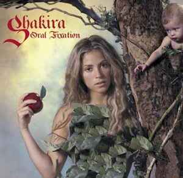

"Good Girl Gone Bad" by Rihanna (2007):
Noteable Tracks:Don't Stop the Music,Umbrella

"Oral Fixations, Vol.2" by Shakira (2005)
Noteable Tracks:Hips Don't Lie
"Good Girl Gone Bad" by Rihanna (2007):
Noteable Tracks:Don't Stop the Music,Umbrella
"Oral Fixations, Vol.2" by Shakira (2005)
Noteable Tracks:Hips Don't Lie

"The Eminem Show" by Eminem (2002)
Noteable Tracks: Without Me, Sing For The Moment,Till I Collapse
"Turning Point" by Mario (2004)
Noteable Tracks:Let Me Love You